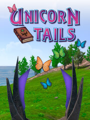

Unicorn Tails
Unicorn Tails
Details
|  | |
| Playtime | 1h 7m 0s |
| Last Activity | 3/9/2022 15:56:57 |
| Added | 8/19/2023 14:50:25 |
| Modified | 8/19/2023 20:10:49 |
| Completion Status | Played |
| Library | Steam |
| Source | Steam |
| Platform | PC (Windows) |
| Release Date | 6/22/2020 |
| Community Score | |
| Critic Score | |
| User Score | |
| Genre | Adventure Indie Role-playing (RPG) Simulator |
| Developer | |
| Publisher | |
| Feature | Single Player |
| Links | Steam Official Twitch |
| Tag | |
Description
Unicorn Tails tells the story of the vast Unicorn Kingdom. Explore Unicorn Island, which was once one of the premier destination spots for all unicorns. That is until Wall Day, when the mainland completely disappeared leaving only the endless ocean surrounding Unicorn Island. Learn about the history of this great Kingdom, discover ways to help the islanders cope and thrive in their new world.
Or don’t!
You can create your own unique unicorn and run around the island playing mini games, using magic, talking to the residents of Unicorn Island, and make your own story!
Unicorn Tails is the first game from developers RavenFist Studios. We are building this game because our children wanted a video game where they can run around as a unicorn. Unable to find one, we decided to create it. If our kids want to run around as a unicorn, chances are other kids want to run around as a unicorn too. This isn’t Insert-Word-Here Simulator. This is a world that is being crafted with thought and care.
We are continuing to develop quests, events, and activities that will keep the game fresh. The more popular the game becomes, the more content we will create. This includes adding new game modes and ways to get off Unicorn Island to see new and distant lands.
We are always interested in feedback. What gameplay elements are your children enjoying? What would they like to see added to the game? We’ve already made several additions to gameplay as a result of 5-year-old feedback and will continue to shape the game to be a joy for everyone who plays!
Or don’t!
You can create your own unique unicorn and run around the island playing mini games, using magic, talking to the residents of Unicorn Island, and make your own story!
Game Features
- Unique unicorn creation. Choose the colors of your unicorn to suit your personality.
- Complete, open world to explore.
- Obtain magic abilities for your unicorn, including the ability to change the weather, summon objects, leap as high as the trees, and more!
- Unlock the ability to transform into a flying Pegasus!
- Explore mazes and dungeons - some are easy, some aren't!
- Play mini-games! Obstacle courses, target practice, timed challenges, and even horde mode await you.
- Collect books that tell stories within Unicorn Tails! Every book is fully narrated for younger children, or the narration can be turned off to encourage reading.
- Quests to complete, items to find, and characters to interact with. There are a lot of things to do in Unicorn Tails.
- A day/night and weather cycle that affects gameplay and opportunities for interaction.
- Original music
- No micro-transactions. Ever! All new content is included in the game’s price.
- No in-game currency to buy. The game is one price. Period.
A Note from the Devs
Unicorn Tails is the first game from developers RavenFist Studios. We are building this game because our children wanted a video game where they can run around as a unicorn. Unable to find one, we decided to create it. If our kids want to run around as a unicorn, chances are other kids want to run around as a unicorn too. This isn’t Insert-Word-Here Simulator. This is a world that is being crafted with thought and care.
We are continuing to develop quests, events, and activities that will keep the game fresh. The more popular the game becomes, the more content we will create. This includes adding new game modes and ways to get off Unicorn Island to see new and distant lands.
We are always interested in feedback. What gameplay elements are your children enjoying? What would they like to see added to the game? We’ve already made several additions to gameplay as a result of 5-year-old feedback and will continue to shape the game to be a joy for everyone who plays!